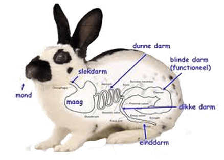

Spijsverteringstelsel
We beginnen lekker door de mond hier word alles gemalen en speeksel toe gevoegd.
door de slokdarm komt het in de maag terecht. Hier mengt het zich met vele sappen. om al het voedel te verteren.
In de dunne darm word het meest verteerd. Deze is langer als alle andere bij een herbivoor.
Plantaardig voedsel is moeilijker te verteren als vlees.
overige voedselresten gan naar de dikke darm. om zo in keutels te veranderen.
deze komen uit de anus.

onderdelen spijsvertering: Mond, Slokdarm, Maag, Dunne darm, Blinde darm, dikke darm, Anus.
In de Mond heb je de tanden en speekselklieren. De tanden groeien continu door.
Deze zijn aangepast aan het knagen en malen van vezelig materiaal. Hier slijten ze ook door.
De slokdarm stuurt het gemalen voer naar de maag.
De maag begint de vertering van de eiwitten door middel van maagzuur en enzymen.
bij de dunne darm vind je de twaalfvingerige darm hier komen gal uit de galblaas
en alvleeskliersappe uit de alvleesklierbij de voedselbrij.
deze sappen helpen bij het verteren van vetten, eiwitten en koolhydraten. verder in de dunne darm word er nog meer verteerd en voedingstoffen opgenomen.
in de dikke darm scheide de verteerde en de onverteerde voedseldeeltjes. onverteerde deeltjes vormen zich als keutels.
In de anus verlaten zich de keutels het lichaam.
About Us
Hey allemaal, dit is mijn website gemaakt voor school.
ik ben mats, 21 jaar en zit op Yuverta Den Bosch op dier en management.
In het eerste jaar leren we over de gezelschapsdieren en hier komt dit project bij kijken
ik heb gekozen voor de vlaamse reus omdat ik het een heel mooi en machtig konijn vind.